Interfacing EN: Interfacing
- Serial, Parallel and Sound Card Interfacing
- Radio interfacing
- Interfacing for PTT and CW Keying
- Circuits for CW and PTT Keying
- USB Port Keying
- Additional Parallel Port Interfacing
- External DVK Interfacing
- Band Decoder Output
- Sound Card Interfacing
- Serial/Parallel Port em Windows XP a 11
- Hooking up a Footswitch
- Avoiding RFI and Other Common Interfacing Maladies
- USB Interface Devices
- CW issues with USB Adapters
- Sound Interfacing and USB External Sound Cards
- Supported Hardware
- N1MM Rotator Control
Serial, Parallel and Sound Card Interfacing (Interfaceamento Serial, Paralelo e por Placa de Som)
Ports Used for Interfacing (Portas Usadas no Interfaceamento)
O programa pode se conectar ao seu rádio usando várias portas do computador:
- Porta serial – Uma porta serial pode enviar CW, controlar o PTT ou se comunicar com o rádio; com alguns rádios, é possível fazer as três coisas em uma única porta. Portas seriais de hardware estão desaparecendo rapidamente da maioria dos computadores, mas se o computador tiver slots PCI livres, placas seriais (ou serial/paralela) baratas estão disponíveis. Alternativamente, podem ser usados adaptadores USB-serial
- Porta paralela – O interfaceamento por porta paralela (LPT) é bem flexível. Além de controlar CW e PTT, o N1MM Logger usa a porta LPT para controlar caixas SO2R populares, e para enviar informação de banda a um decodificador de banda para troca automática de antena ou filtro passa-banda. Com uma exceção, adaptadores USB-paralela não funcionam aqui. Note também que você ainda vai precisar de uma porta serial (real ou virtual) separada para controle de rádio, pois isso não pode ser feito por uma porta paralela
- Porta USB – A maioria dos computadores atuais tem várias portas USB. Adaptadores USB-serial podem fornecer toda a capacidade de uma porta serial, mas nem todos esses adaptadores (ou seus drivers) funcionam bem com o N1MM Logger+. Veja USB Interface Devices para detalhes. Há também muitos dispositivos de interface que usam controle por porta USB para uma gama completa de recursos — veja o capítulo Supported Hardware
- Placa de som – O N1MM Logger+ pode usar a placa de som do seu computador para gravar os QSOs do contest, e também para enviar mensagens de áudio armazenadas ao transmissor ao pressionar teclas de função. A placa de som pode estar na placa-mãe, ser uma placa separada interna, ou uma placa de som externa conectada por cabo USB. Para esses fins, é melhor um computador ou placa de som com entradas separadas de microfone e linha, além de uma saída de linha. Algumas placas de som (principalmente em notebooks) só têm dois conectores, ou até um único conector "combo", e a entrada pode não ser comutável entre microfone e linha. Nesse caso, não será possível usar o microfone pela placa de som e gravar QSOs ao mesmo tempo
Troubleshooting Com Port In Use Errors (Resolvendo Erros de Porta COM em Uso)
Mensagens de erro "Com Port In Use" – De vez em quando o Windows se confunde e deixa órfãs portas COM físicas e virtuais. Essas portas não ficam visíveis para o usuário no Gerenciador de Dispositivos, mas o Windows as enumera, causando falhas ao tentar criar uma porta COM virtual onde já existe uma invisível. Este procedimento, na maioria dos casos, permite exibir as portas COM ocultas para apagá-las, eliminando possíveis conflitos. Antes de começar, desligue o rádio e feche qualquer programa que possa estar usando as portas COM virtuais, como o SmartSDR CAT ou outras aplicações de terceiros.
- Clique em Iniciar, aponte para Todos os Programas, depois Acessórios, e clique em Prompt de Comando
- No prompt de comando, digite o comando a seguir e pressione ENTER: set devmgr_show_nonpresent_devices=1
- Digite o comando a seguir e pressione ENTER: start devmgmt.msc
- Investigue os dispositivos e drivers no Gerenciador de Dispositivos
- Clique em Mostrar dispositivos ocultos no menu Exibir do Gerenciador de Dispositivos, para ver todos os dispositivos associados ao computador
- Role até a seção Portas e você verá todas as portas COM ocultas e não usadas. As portas ocultas têm um ícone acinzentado ao lado
- Para apagar uma porta específica, clique para selecioná-la e pressione Delete. Na janela de confirmação, clique OK
- Depois de apagar as portas COM não usadas e ocultas, a lista mostrará só as portas que você usa ou pode vir a usar. Cuidado para não apagar portas que estão funcionando corretamente
- Ao terminar, feche o Gerenciador de Dispositivos
- Digite exit no prompt de comando
Note que, ao fechar a janela do prompt de comando, o Windows limpa a variável devmgr_show_nonpresent_devices=1 definida no passo 2, impedindo que dispositivos fantasmas apareçam ao clicar em Mostrar dispositivos ocultos novamente.
Por fim — se nada mais funcionar — esta sugestão de Peter DF1LX: "Tive esse problema por alguns meses. Nada do que foi mencionado neste tópico ajudou. Só usando o editor de registro e procurando o valor comx descobri que outro programa, que nunca usa nenhuma porta COM, tinha uma entrada de registro mostrando aquela porta COM. Apagando essa entrada de registro, o problema desapareceu. Eu faria isso como última opção, se as outras dicas não funcionarem."
Radio interfacing (Interfaceamento com o Rádio)
Os fabricantes de rádio oferecem várias formas de interfacear rádios com computadores para funções de controle de rádio. Todas essas interfaces aparecem para o software do computador como uma porta serial RS-232 padrão, mas o hardware usado varia bastante. No mínimo, os recursos suportados pelas interfaces de controle de rádio incluem ler e definir a frequência e o modo de operação. A maioria (mas não todos) dos rádios com controle por computador também oferece comandos para o computador controlar a comutação TX/RX (PTT). Rádios mais novos suportam controle de uma variedade maior de recursos, como controle de RIT/XIT, troca de filtros e outras funções.
As primeiras interfaces de controle de rádio geralmente usavam níveis de tensão TTL no conector do rádio, incompatíveis com os níveis de sinal RS-232, exigindo caixas externas de interface de controle de rádio para fazer a conversão entre TTL (0 e +5V) e RS-232 (-12V e +12V). Essas interfaces usam as linhas TxD e RxD do RS-232 para comunicação de dados, e algumas também exigem handshaking RTS/CTS, que geralmente pode ser simulado deixando a linha RTS sempre ligada. Essas interfaces externas de controle de rádio precisam de alimentação DC, fornecida separadamente ou, em alguns casos, por uma das linhas de controle RS-232 (geralmente DTR ou RTS), caso em que essa linha precisa ser configurada como sempre ligada. Do lado do computador, se ele não tiver portas seriais, geralmente um adaptador USB-serial pode ser usado no lugar.
Alguns rádios mais novos têm portas seriais RS-232 verdadeiras, dispensando a interface externa de conversão de nível, mas configuradas de forma semelhante às antigas portas de nível TTL. Na maioria dos casos, essas portas seriais ainda só suportam dados de controle de rádio pelas linhas RxD e TxD, possivelmente com handshaking RTS/CTS, mas em pelo menos um caso (o Elecraft K3), a porta RS-232 do rádio também suporta chaveamento direto de CW e PTT usando as linhas de controle DTR e RTS. De novo, tanto uma porta serial verdadeira quanto um adaptador USB-serial podem ser usados do lado do computador.
Mais recentemente, com as portas seriais dos computadores ficando cada vez mais raras, alguns rádios novos incorporam um adaptador USB-serial internamente, de forma que a conexão física com o rádio é um simples cabo USB. Mesmo assim, os drivers dessas portas USB continuam aparecendo para o software como portas seriais RS-232 padrão. Em muitos casos, a mesma conexão USB também alimenta um CODEC ("placa de som") interno ao rádio, eliminando a necessidade de conexões de áudio entre o computador e o rádio, mas do ponto de vista do software, essa única conexão USB aparece como dois dispositivos separados: uma porta serial RS-232 e uma placa de som padrão. Esses dois dispositivos precisam ser configurados separadamente, mesmo compartilhando um único cabo.
Interfacing for PTT and CW Keying (Interfaceamento para PTT e Chaveamento de CW)
Choosing Your PTT Method (Escolhendo seu Método de PTT)
PTT é uma abreviação comum para a comutação RX/TX (derivada de "push-to-talk", usada em modos de voz). O N1MM Logger+ oferece vários métodos para controlar o PTT do seu rádio. A menos que você use VOX, ou QSK em CW, você vai precisar escolher um desses métodos, e a escolha pode variar conforme o modo em que você quer operar, as capacidades do seu rádio e como você escolhe usá-las, interfaces existentes ou outra fiação de PTT já feita para outros programas, e assim por diante.
Como regra geral, decida por um método de PTT de cada vez. Você pode usar métodos diferentes em modos diferentes, mas em cada modo só deve haver um método ativo. Ter dois métodos de PTT ativos ao mesmo tempo já causou problemas em alguns rádios, como não voltar para RX no fim de uma transmissão.
Os métodos disponíveis são:
- Hardware PTT – usa uma porta serial (COM) ou paralela (LPT). O programa controla o estado de linhas individuais da porta para PTT e CW (e, no caso da porta LPT, funções adicionais também podem ser controladas pela mesma porta). Muitos rádios recentes oferecem a opção de chaveamento de PTT via linhas de controle na(s) porta(s) serial(is) virtual(is) criada(s) pelo driver USB do rádio. Nesses rádios, o menu do próprio rádio é usado para escolher qual porta e linha de controle usar para PTT (ou "SEND"). Esse método é conveniente quando disponível, pois não exige hardware externo. Ao usar uma porta paralela (LPT) para chaveamento, pode ser necessário um driver especial (INPOUT32), baixado durante a instalação inicial do programa, mas que exige uma etapa adicional de registro — veja Installing the Software para detalhes. O Hardware PTT funciona com adaptadores USB-serial, mas não com adaptadores USB-LPT, exceto o Piexx SO2RXLAT. Em alguns rádios com múltiplas entradas de PTT, a escolha de qual conexão usar pode depender de qual porta de entrada de áudio você está usando
- Software PTT – usa comandos de software de PTT (TX/RX) enviados ao rádio pela porta de controle. Provavelmente é o método mais fácil de configurar, mas há situações em que pode não estar disponível ou ser recomendado. Em certos rádios, o software PTT pode não estar disponível, ou só funcionar com certas escolhas de entrada de áudio. Por outro lado, em rádios com um CODEC embutido (efetivamente, uma placa de som dentro do rádio), se você quiser usá-lo tanto para AFSK (modos digitais) quanto como voice keyer para SSB, pode precisar do Software PTT. Confira a seção Supported Radios para instruções do seu rádio. O Software PTT funciona bem com alguns rádios, mas com outros que exigem um atraso maior entre comandos CAT, pode ser mais lento que o Hardware PTT ou o Winkeyer PTT. Em rádios Icom, se ocorrer uma colisão de dados no barramento CI-V, o PTT pode falhar ao acionar ou travar em transmissão, exigindo um Esc para voltar à recepção. Além disso, note que o N1MM Logger+ não consegue controlar o PTT de um DVK embutido no rádio (diferente de um CODEC usado para enviar mensagens armazenadas no computador), pois se a mensagem gravada não for enviada pelo computador, o programa não sabe quando ela terminou. Por isso, esses DVKs precisam usar VOX. Da mesma forma, o N1MM Logger+ não controla o PTT de CW enviado por uma paddle conectada a um keyer dentro do rádio, pois não sabe quando a paddle está sendo usada
- Winkeyer PTT – usa o PTT fornecido pelo keyer Winkeyer, mas também funciona em SSB e modos digitais. Se uma porta está configurada para controlar um Winkeyer, o PTT é ativado automaticamente nos conectores do painel traseiro do Winkeyer, bastando ligar o cabo ao conector correto do seu rádio. Se você usa a versão original, v10, do K1EL Winkeyer, a função do Pino 5 na aba Winkey do Configurer precisa estar definida como PTT (não necessário em versões mais novas). O Winkeyer PTT é a opção mais flexível de PTT, principalmente em CW, pois você pode definir o "Hang Time" entre caracteres separadamente do "Tail Time" de fim de mensagem. As configurações ficam na aba Winkeyer do Configurer. Se você escolher outro método de PTT, basta omitir esse cabo
- Digital Modes PTT – Para usar o CODEC do rádio em AFSK nos modos digitais, com alguns rádios o PTT pode precisar ser controlado pelo N1MM Logger+ via Software PTT (veja acima). Para AFSK sem CODEC embutido, ou em rádios sem essa limitação, você pode usar qualquer uma das outras opções de PTT do Logger. Ao usar FSK, normalmente você configura o software e o hardware para usar PTT na mesma porta usada para chaveamento FSK. Se você usa um software como o MMTTY para FSK, o PTT naquela porta é controlado pelo "mecanismo" digital, não pelo N1MM+ diretamente. Se os únicos modos em que você usa PTT são digitais, pode configurar o PTT só no programa digital (ex.: MMTTY). Porém, se você configurar uma porta para PTT e/ou chaveamento FSK no seu programa digital e quiser usar a mesma porta COM para PTT em modos não digitais ou para chaveamento de CW, é preciso marcar a caixa "Digi" para aquela porta na aba Hardware do Configurer. Isso diz ao Logger para fechar a porta e entregá-la ao programa digital ao mudar para um modo digital. Se você configurar o PTT inteiramente no N1MM+ e não no programa digital, não marque a caixa "Digi"
Para modos SSB ou digitais, use qualquer uma das opções acima. Lembre-se: se você está usando o CODEC de áudio do seu rádio, pode precisar de Software PTT em vez de Hardware PTT por COM ou LPT.
Para CW, se você tem um Winkeyer e não está usando QSK ou semi-breakin, mas quer controle de PTT, o Winkeyer PTT é recomendado, pois dá mais flexibilidade para ajustar hang e tail time. Sem Winkeyer, mas com uma porta serial ou USB, o Hardware PTT pode ser feito com uma simples chave de transistor ligada à linha apropriada de uma porta serial ou adaptador USB-serial. CW e PTT podem ser controlados em uma única porta. Com alguns rádios, também pode ser possível fazer o controle de rádio na mesma porta, se o rádio não precisar que as linhas RTS e DTR sejam usadas de forma específica para o controle (como handshaking em RTS/CTS, o que deixaria a linha RTS indisponível para CW ou PTT).
Choosing Your CW Method (Escolhendo seu Método de Chaveamento de CW)
O N1MM Logger+ oferece vários métodos para chavear CW no seu rádio.
Os métodos disponíveis são:
- Hardware CW – usa portas seriais (COM) ou paralelas (LPT), geralmente separadas da porta de controle de rádio. O software controla o estado de linhas individuais da porta, para PTT e CW (e, na LPT, funções adicionais). Na porta paralela, pode ser necessário um driver (INPOUT32), instalado pelo Full Installer, mas que às vezes exige rodar "como Administrador" uma vez para registrar o driver. Funciona com adaptadores USB-serial, mas não com USB-LPT, exceto o Piexx SO2RXLAT. Como no PTT, muitos rádios recentes com porta USB permitem escolher uma linha de controle (DTR ou RTS) na porta serial virtual criada pelo driver USB do rádio — conveniente, pois não exige hardware adicional
- Winkeyer CW – usa um K1EL Winkeyer ou equivalente. É o método mais recomendado, por ser praticamente imune a problemas de temporização causados por eventos inesperados no computador (como uma atualização do Windows, do antivírus, ou outra atividade pesada em segundo plano). A temporização do CW é controlada externamente ao computador, pelo próprio Winkeyer. Ele também pode ser usado com uma paddle como um keyer normal de CW, com a vantagem (sobre um keyer separado ou embutido no rádio) de que a paddle e o chaveamento pelo computador ficam integrados — por exemplo, tocar a paddle interrompe o chaveamento do computador sem sobreposição ou distorção, e as velocidades da paddle e do computador são as mesmas
CW Keying Using CAT Commands (Chaveamento de CW por Comandos CAT)
Alguns rádios (Kenwood, Elecraft, Flex) permitem enviar CW via mensagens de comando de rádio "KY". Alguns rádios com memórias internas de CW podem permitir que essas memórias sejam enviadas por comandos CAT. Esses métodos via comando CAT não têm suporte da equipe do Logger. Isso não significa que não funcionem de forma alguma. Você pode programar esses comandos em mensagens de tecla de função usando macros {CAT1ASC}, mas além de só funcionar com certos rádios, há várias outras limitações:
- Só é possível colocar um comando CAT1ASC por mensagem de tecla de função
- O número de caracteres que podem ser enviados em uma mensagem de comando KY é limitado (ou, em alguns rádios, fixo em um número exato de caracteres). Note que isso se refere ao número de caracteres Morse (incluindo espaços) para os quais a mensagem é convertida, não à contagem de caracteres do comando do N1MM Logger+. Por isso, projete suas mensagens para não ultrapassarem (ou terem exatamente) esse número de caracteres, mesmo com o indicativo e exchange mais longos possíveis durante o contest. Se você exceder o limite em uma mensagem composta, pode ser que nada seja enviado
- Não é possível enviar CW livre pelo programa dessa forma, ou seja, o comando Ctrl+K para CW pelo teclado não funciona com este método
- Editar indicativos na hora não funciona com este método
- O recurso "send corrected call sign" não funciona com este método
- O recurso "CW autosend" não funciona com este método
- A velocidade de CW, com este método, é controlada pelo próprio controle de velocidade de CW do rádio, não pelo N1MM Logger+. As macros de velocidade de CW do Logger e as teclas PgUp/PgDn não funcionam com este método
- Depois de pressionar a tecla de função com uma dessas mensagens, você só pode interromper a mensagem pelo N1MM Logger+ usando a tecla Esc se o rádio suportar essa capacidade via comando CAT e ela tiver sido implementada no N1MM+ para aquele rádio. Caso contrário, talvez seja possível interromper a mensagem em andamento pelos controles do próprio painel do rádio
- Se você quiser usar a repetição automática de CQ no N1MM Logger+, o intervalo de repetição é medido do início de uma mensagem ao início da próxima, ou seja, inclui a mensagem em si mais o tempo entre mensagens. Por isso, precisa ser maior que a duração da sua mensagem de CQ na velocidade de CW mais lenta que você usa. Se você mudar a velocidade de CW pelo controle do rádio, um intervalo de repetição adequado para a velocidade mais lenta provavelmente ficará mais longo do que você gostaria em velocidades maiores
A equipe às vezes recebe perguntas sobre por que o CW do Logger não funciona com softwares ou interfaces que enviam tons de áudio ao transceptor. Geralmente envolve a interface Signalink USB ou o programa FLDIGI.
O N1MM Logger+ não suporta, e não vai suportar, essa forma de gerar CW. Há alguns motivos. Primeiro, em muitos transceptores, quando estão em modo USB ou LSB, você fica sem acesso aos filtros de CW e outros recursos de recepção de CW. Segundo, CW por placa de som traz vários problemas, incluindo ruído de áudio no seu CW, interferência de RF nos tons de CW, e a possibilidade de gerar dois ou três sinais de CW separados devido a harmônicos de áudio. É simplesmente uma má ideia!
As interfaces simples descritas abaixo são fáceis de montar, com baixo custo e componentes facilmente encontrados.
Circuits for CW and PTT Keying (Circuitos para Chaveamento de CW e PTT)
Parallel (LPT) Port for CW and PTT
Esta é uma interface simples e típica para chaveamento de CW e PTT por porta paralela. Circuitos separados (transistores) são usados para CW e PTT.
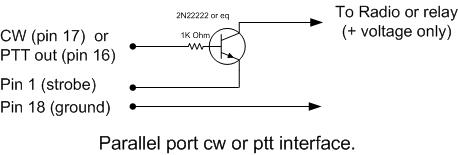
| Pino LPT | Função |
| 1 | Strobe |
| 16 | Saída de PTT |
| 17 | Saída de CW |
| 18 | Terra (Ground) |
Para dicas de diagnóstico de problemas com a porta paralela, veja a nota em Additional Parallel Port Interfacing, um pouco mais adiante.
Serial (COM) Port
Quando uma porta serial é usada para chaveamento de CW e/ou PTT, são as linhas RTS e DTR que entram em ação.
| Pino DB9 | Pino DB25 | Função |
| 7 | 4 | Saída de PTT (RTS) |
| 4 | 20 | Saída de CW (DTR) |
| 5 | 7 | Terra (Ground) |
As linhas de CW e PTT de um rádio precisam estar na mesma porta serial/paralela. Exemplo: se COM4 é a porta de CW e Radio 1 ou Both está selecionado, o controle de PTT do Radio 1 também precisa estar na COM4. Conversores USB-serial são suportados, mas conversores USB-LPT (paralela) não são.
Using a transistor (Usando um Transistor)
O circuito de chaveamento para CW ou PTT por porta serial é parecido com o usado na porta paralela.
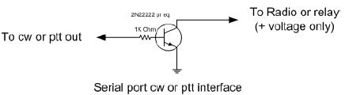
- Equivalentes do 2N2222 são o 2N3904, BC547 ou BC548
- Nota: não é má ideia adicionar um resistor de 1 kOhm da base ao terra; também é altamente recomendável adicionar um capacitor de derivação de 10 nF na saída do coletor para o terra, para evitar realimentação de RF na base e o bloqueio consequente
Using an opto-Isolator (opto-coupler) (Usando um Optoacoplador)
Alguns usuários preferem usar um optoacoplador em vez de um transistor, para proteger melhor a porta serial caso algo dê errado no restante do circuito. Nesse caso, porém, duas considerações especiais podem se aplicar:
- Pode ser necessário colocar um diodo em série com a entrada do optoacoplador, para protegê-lo de variações de tensão negativa em uma porta serial padrão. Verifique as especificações do optoacoplador usado para saber se isso é necessário
- Alguns optoacopladores podem não puxar a saída "baixa" o suficiente (perto o bastante de zero volts) para chavear o PTT ou CW em um determinado transceptor. Nesse caso, medidas apropriadas de "pull-down" devem ser aplicadas
USB Port Keying (Chaveamento por Porta USB)
Nem todos os computadores têm mais portas seriais, ou, se têm, não são suficientes para controlar transceptores, packet, chaveamento serial de CW etc. Nesse caso, considere um adaptador USB-serial. A maioria funciona bem para funções básicas de controle de rádio e/ou chaveamento de CW e PTT. Esses dispositivos precisam de drivers no computador; garanta que existam drivers para o seu sistema operacional antes de tentar usar um desses adaptadores.
A temporização do chaveamento por porta serial ou paralela pode sofrer "gagueira" (stuttering), causada pela CPU ficando indisponível para controlar a porta enquanto ocupada com outras tarefas. Para um CW perfeito, independente dos processos do Windows, a resposta usual é usar um Winkeyer da K1EL. O computador se comunica com o Winkeyer usando caracteres ASCII normais pela porta serial, que ficam em buffer dentro do Winkeyer e são convertidos em CW ali mesmo. Assim, a temporização do CW fica independente de atrasos de processamento do computador. Um adaptador USB/serial funciona bem com um Winkeyer; de fato, a maioria dos Winkeyers vendidos hoje são keyers WKUSB com um adaptador USB-serial já embutido. Consulte o manual do Winkeyer para mais informações.
Em alguns casos, o chaveamento de PTT e CW pode parar de funcionar inesperadamente ao usar um conversor USB-serial, porque o Windows desligou a porta USB para economizar energia. Verifique esta configuração do Windows:
- Painel de Controle; ícone Sistema
- Aba ou botão Gerenciador de Dispositivos
- Expanda Controladores de Barramento Serial Universal (USB)
- Selecione cada Hub Raiz USB ou Hub USB Genérico, um de cada vez
- Clique duas vezes para abrir Propriedades, aba Gerenciamento de Energia
- Desmarque "Permitir que o computador desligue este dispositivo para economizar energia"
- Essa caixa vem marcada por padrão na maioria dos casos
- Repita para cada Hub Raiz USB e Hub USB Genérico
- Reinicie o computador
Outra visão geral sobre conversores serial-USB pode ser encontrada na página de RTTY contesting de AA5AU, em rttycontesting.com.
Additional Parallel Port Interfacing (Interfaceamento Adicional por Porta Paralela)
Se o tipo de porta de CW escolhido for LPT1, LPT2 ou LPT3, usando uma porta LPT de hardware, informações adicionais estarão presentes na porta paralela escolhida. No Configurer, selecione o rádio correspondente à porta escolhida (Radio 1 ou Radio 2). Os dados BCD na LPT são os do rádio/VFO ativo no momento. Os dados de banda ficam disponíveis em várias portas LPT — Radio 1 na LPT1, Radio 2 na LPT2, e assim por diante. Conversores USB-LPT não são suportados.
Pino LPT e Descrição
1 — Retorno para as saídas de PTT e CW. Este pino tem capacidade de dreno limitada, então pode ser necessário um buffer
2 — Saída de banda (bit menos significativo), definida pela aba Antenna no Configurer. Este pino também é usado para interromper a mensagem enviada no DVK de hardware
3 — Foco de TX compatível com NA. O Pino 3 (Radio 1/2) vai para nível lógico BAIXO (0V) quando o Radio 1 tem foco de TX, e para ALTO (5V) quando o Radio 2 tem o foco (o pino 3 da LPT é o complemento do pino 14). Configure SOMENTE se nenhuma saída de DVK de hardware estiver selecionada (msg nº 1)
4 — Foco de RX compatível com NA. O Pino 4 da LPT vai para BAIXO quando o Radio 1 tem foco de RX, e ALTO quando o Radio 2 tem. Configure SOMENTE se nenhuma saída de DVK de hardware estiver selecionada (msg nº 2)
5 — (Shift+aspa simples) para alternar Estéreo/Mono. O Pino 5 da LPT vai para BAIXO em áudio mono, e ALTO em áudio estéreo. Configure SOMENTE se nenhuma saída de DVK de hardware estiver selecionada (msg nº 3)
6 — Configure SOMENTE se nenhuma saída de DVK de hardware estiver selecionada (msg nº 4)
7 — Saída de banda, definida pela aba Antenna no Configurer
8 — Saída de banda, definida pela aba Antenna no Configurer
9 — Saída de banda (bit mais significativo), definida pela aba Antenna no Configurer
14 — Seleção de rádio A/B (foco de transmissão), para compatibilidade com o DX Doubler. O Pino 14 da LPT vai para ALTO quando o Radio 1 tem foco de TX, e BAIXO quando o Radio 2 tem (o pino 14 é o complemento do pino 3)
15 — Porta de entrada do footswitch
16 — Saída de PTT, alto = modo transmissão
17 — Saída de CW
18 a 25 — Retorno para a saída de banda
Diagnosing Parallel Port Problems (Diagnosticando Problemas na Porta Paralela)
Todas as placas PCI-e de porta paralela funcionam?
Com a tecnologia avançando tão rápido, é difícil ser categórico sobre isso, e já houve relatos no reflector sugerindo que algumas famílias de chips de porta LPT não são compatíveis com os componentes de software usados pelo N1MM Logger+ para controlar linhas individuais de uma porta LPT. Resultados experimentais mostram, porém, que duas famílias de chips funcionam, a partir de fevereiro de 2013. Esses chips são usados tanto em placas de porta única quanto em placas combinadas (2 seriais e 1 paralela, por exemplo), mas só foram testados sistematicamente na variante de uma porta LPT:
- MOSChip Semiconductors, série MCS9900. Esta empresa agora pertence à Asix Electronics Corporation, e o driver mais recente pode ser baixado no site deles (especifique PCIe Bridge como família de produto). Esses chips são usados na placa SYBA SD-PEX10005 de 1 porta paralela, disponível nas lojas online de sempre
- Oxford Semiconductor OX16PC952-954. Os chips desta empresa são usados em várias placas LPT de 1 porta, incluindo a StarTech.com PEX1P, também amplamente disponível. Originalmente, acreditava-se que fossem incompatíveis com o chaveamento de porta paralela, mas isso não parece ser o caso (fale com N4ZR para detalhes)
Diagnosing LPT Port Issues (Diagnosticando Problemas na Porta LPT)
Recentemente, vários usuários encontraram dificuldade em usar portas LPT PCI-e para controlar decodificadores de banda, controladores SO2R e outros dispositivos. Depois de muita experimentação, aqui vão algumas coisas para tentar se você tiver problemas.
- Garanta que você especificou o endereço correto no Configurer do N1MM. Normalmente, placas PCI-e adicionais têm endereços de I/O que não são os padrão para um determinado número de porta. Por exemplo, portas LPT1 embutidas costumam ter o endereço 0378, o menor dos dois endereços de I/O mostrados no Gerenciador de Dispositivos para aquela porta. Por outro lado, 3 placas PCI-e diferentes testadas têm endereços fixos de I/O em D000 e D010, independente do número da porta LPT, e o endereço correto é o maior — D010. Na dúvida, tente os dois
- Na primeira vez que você rodar o N1MM Logger+ depois de uma nova instalação, não o abra por um atalho. Em vez disso, vá até o diretório do programa N1MM Logger+, clique com o botão direito no executável (.exe) e selecione "Run as Administrator" (Executar como Administrador). Foi sugerido que este passo pode ser necessário em alguns casos, para o componente que controla a porta paralela ser registrado corretamente, e não faz mal fazer isso. É um passo único
External DVK Interfacing (Interfaceamento com DVK Externo)
Ao selecionar DVK em uma porta paralela, a seleção de antena por aquela porta fica desabilitada, pois os pinos do DVK e os pinos de antena da porta LPT se sobrepõem. Segue a tabela de pinagem para controle de DVK externo:
F1 pino 3
F2 pino 4
F3 pino 5
F4 pino 6
F5 pinos 4 e 6
F6 pinos 4 e 5
F7 pinos 4, 5 e 6
Ao pressionar F1-F7, um pulso de 100 ms é enviado aos pinos relevantes para o controle do DVK externo.
Para gravar mensagens em um DVK externo, você precisa ligar o microfone diretamente a ele e seguir o procedimento do manual do DVK; o suporte do N1MM Logger+ se limita a disparar as primeiras 7 memórias ao pressionar a tecla de função correspondente (F1-7), e parar a reprodução da mensagem armazenada ao pressionar ESC. Alguns DVKs externos têm apenas 4 memórias, caso em que só F1-F4 disparam a reprodução.
Band Decoder Output (Saída para Decodificador de Banda)
Os pinos 9, 8, 7 e 2 podem ser definidos pela aba Antenna no Configurer. A saída nesses pinos segue o código selecionado, configurado pela antena escolhida.
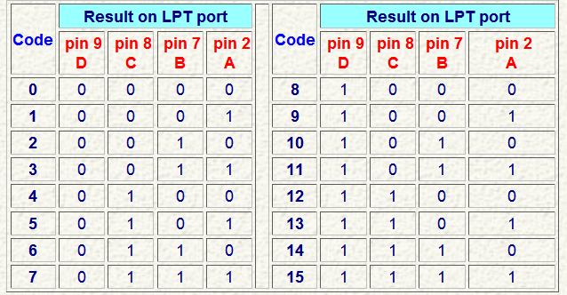
Sample configs (Configurações de Exemplo)
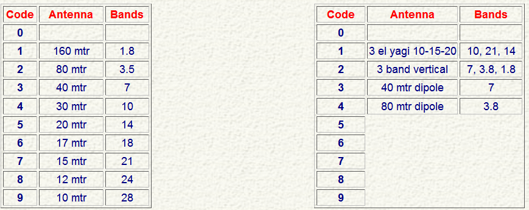
Para replicar o comportamento padrão do Top-Ten Devices, configure a aba Antenna do Configurer como mostrado acima.
É possível usar mais de uma antena por banda no N1MM Logger+. Com Alt+F9 dá para alternar entre essas antenas. Liste as bandas de cada antena separadas por vírgula — ex.: 3.5,7
Sample Config > Antenna for two stacked antennas (Exemplo para Duas Antenas Empilhadas)
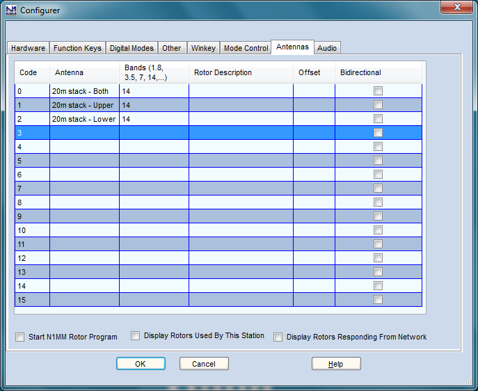
Você vai precisar fazer o arranjo adequado com uma matriz de diodos na saída do seu decodificador de banda, para selecionar a(s) antena(s) apropriada(s) quando um dado código for enviado do programa ao decodificador. Por exemplo, se o seu decodificador de banda gera tensão positiva e você usa uma beam tribanda com um único cabo coaxial de alimentação, você vai precisar de diodos para somar os três sinais do decodificador em uma única linha de alimentação.
Bearing Data (Dados de Rumo)
Dados de rumo para controle de rotor não estão disponíveis atualmente pela porta LPT.
Sound Card Interfacing (Interfaceamento por Placa de Som)
Claro, você sempre pode usar uma das várias interfaces de áudio comerciais projetadas principalmente para modos digitais. Porém, se você tem uma placa de som que permite passar a entrada de microfone pela saída de linha (a maioria permite), e um mixer que ajusta independentemente o nível do microfone, a reprodução de .wav e o áudio gerado internamente (como para AFSK), você realmente não precisa de nenhuma interface. Em SSB, basta ligar o microfone na entrada de mic da placa de som. Ligue a saída de linha da placa de som à entrada de linha ou phone patch do seu transceptor, e pronto.
Você pode encontrar zumbido (hum), resultado da diferença de potencial AC entre o chassi do computador e o do transceptor. Nesse caso, um transformador de isolamento de 600 ohms no cabo entre a placa de som e o transceptor resolve. Outra abordagem é unir os chassis do transceptor e do computador com um fio grosso. Muita gente faz as duas coisas.
Se você absolutamente precisar ligar a saída de áudio da placa de som na entrada de microfone do transceptor, o nível será alto demais. Nesse caso, um simples divisor resistivo de tensão 10:1, colocado no cabo de áudio antes do conector de microfone, resolve.
No Windows 10 e 11, a partir de algum momento de 2018, há uma configuração de Privacidade que precisa estar correta para que aplicações, incluindo o N1MM Logger+, tenham acesso às entradas da placa de som (por exemplo, para gravar áudio recebido ou decodificar modos digitais). Na janela de Configurações do Windows, escolha Privacidade, depois, na lista à esquerda, selecione Microfone. Deve aparecer uma opção chamada "Permitir que os aplicativos acessem seu microfone" — deixe-a ativada. A partir da atualização de primavera de 2018 do Windows 10, o Windows aplica essa configuração a todas as entradas de placa de som, não só ao microfone padrão.
Serial and Parallel port interfacing under Windows XP/ Vista/ 7/ 8/ 10/ 11
Windows XP, Vista, 7, 8, 10 e 11 exigem uma dll especial, instalada automaticamente pelo N1MM Logger+, para usar as portas paralelas.
Exposing and Deleting Phantom Serial Ports (Exibindo e Apagando Portas Seriais Fantasmas)
Diferente do N1MM Logger Classic, o N1MM Logger+ suporta números de porta serial até 99. O procedimento a seguir provavelmente não será necessário, mas você pode usá-lo para eliminar portas seriais "fantasmas" (não usadas, mas indisponíveis) do seu sistema.
Veja como fazer o Gerenciador de Dispositivos exibir e remover atribuições de porta serial invisíveis:
- Clique em Iniciar e selecione Todos os Programas > Acessórios
- No Windows XP, clique em Prompt de Comando; no Windows Vista, 7 ou mais novo, clique com o botão direito em Prompt de Comando e selecione Executar como administrador
- Digite set devmgr_show_nonpresent_devices=1 e pressione Enter
- Abra o Gerenciador de Dispositivos. Há várias formas: uma é clicar com o botão direito em Computador (ou Meu Computador), selecionar Propriedades, e depois Gerenciador de Dispositivos. Outra é procurar Gerenciador de Dispositivos no Painel de Controle
- Na janela do Gerenciador de Dispositivos, selecione o menu Exibir > Mostrar Dispositivos Ocultos
- Clique no sinal + ao lado de Portas para ver a lista completa de portas COM já atribuídas no seu computador
- Selecione um número de porta não usado que você quer remover da lista e pressione Delete. Confirme quando solicitado, e continue com quantos números de porta quiser apagar
Obrigado a KK1L e N7WY por esta dica.
Hooking up a Footswitch (Conectando um Footswitch)
Um footswitch pode ser ligado a uma porta serial ou paralela. A ação do programa é a mesma para portas LPT e COM, ou seja, o fechamento do footswitch dispara a ação selecionada no Configurer para aquela porta.
Parallel port (Porta Paralela)
Se o pino 14 não estiver sendo usado para trocar de rádio via uma caixa SO2R externa (por exemplo, usando a tecla Pause), você pode ligar um footswitch à LPT1 conectando um resistor de 10k do pino 14 ao pino 15. O pino 14 normalmente fica em +5V e fornece a tensão de pull-up para o pino 15. Depois, conecte um footswitch normalmente aberto entre o pino 15 e o pino 18 da LPT1. Fechar o footswitch puxa o pino 15 para baixo e executa a função selecionada no Configurer.
Se o pino 14 estiver sendo usado para controle Radio A/Radio B de uma caixa SO2R externa, uma alimentação de 5V com um resistor em série de 10k pode fornecer a tensão de pull-up para o pino 15.
Serial port footswitch information (Informações de Footswitch por Porta Serial, usando a numeração do conector de 9 pinos)
Conecte um resistor de 10k entre o pino 6 e o pino 7. Defina o DTR (pino 4) como "Always On" e o RTS (pino 7) como "Always Off". Conecte o footswitch entre os pinos 4 e 6.
A ação do programa ocorre no fechamento do footswitch. Os fios do footswitch não podem ser referenciados nem conectados ao terra.
Avoiding RFI and Other Common Interfacing Maladies (Evitando RFI e Outros Problemas Comuns de Interfaceamento)
Na maioria das vezes, relatos de problemas estranhos e intermitentes com controle de rádio, interfaceamento de CW e PTT, além de zumbido e distorção no áudio da placa de som, acabam sendo rastreados até RFI — o próprio sinal transmitido aparecendo onde não deveria — ou aterramento inadequado.
Não temos espaço para tratar esse tópico exaustivamente aqui, mas há bons recursos: o reflector de RFI (RFI@contesting.com), este artigo de Chuck Counselman, W1HIS, e estes artigos de Jim Brown, K9YC, disponíveis no site do N1MM+.
USB Interface Devices (Dispositivos de Interface USB)
Com o desaparecimento das portas seriais e paralelas na maioria dos PCs novos, a maior parte dos usuários do N1MM Logger+ hoje é obrigada a usar dispositivos de interface USB para realizar funções antes feitas por portas seriais e paralelas. Isso inclui adaptadores USB-serial de uso geral, além de dispositivos projetados e fabricados especificamente para uso em radioamadorismo. Na maior parte dos casos, com a ajuda dos drivers de software instalados na primeira conexão à PC, esses dispositivos são configurados no N1MM Logger+ como se fossem portas seriais reais, com algumas ressalvas e exceções importantes descritas nas seções a seguir.
Uma categoria separada de dispositivos USB é a "placa de som USB", com função parecida com placas de som internas e de barramento, mas que se conecta ao PC por uma porta USB. Alguns dispositivos voltados à comunidade de radioamadores combinam placa de som USB e adaptador USB-serial em uma única caixa. Alguns transceptores hoje já vêm com esses dispositivos USB incorporados internamente. De forma geral, uma vez instalados os drivers apropriados, esses dispositivos são configurados de forma parecida, estejam dentro de um transceptor ou em uma ou mais caixas separadas.
Adaptadores USB-paralela não funcionam para chavear CW ou controlar PTT pela interface de porta paralela padrão, pois não permitem controlar linhas individuais. A única exceção que conhecemos é o SO2RXLAT da Piexx, projetado especificamente para esse propósito.
CW issues with USB Adapters (Problemas de CW com Adaptadores USB)
As opções de CW por porta serial e paralela do N1MM Logger+ são uma forma simples e fácil de gerar CW, mas se o seu computador for lento, o CW pode não sair sempre suave, principalmente ao receber spots de um cluster Telnet em um contest movimentado. Se isso acontecer com chaveamento serial, tente uma porta paralela, se tiver uma disponível. Se não tiver, ou se você quiser resolver os problemas de CW de uma vez por todas, a resposta é o Winkeyer USB da K1EL, que trata CW e PTT em todos os modos, tirando essas funções inteiramente do computador. Também é um excelente keyer independente, com 4 memórias embutidas.
Outro problema pode ser um peso (weighting) ruim ao usar chaveamento por porta serial. Alguns adaptadores têm muita latência e podem distorcer seu CW. Geralmente isso se corrige encontrando um driver melhor para o adaptador. Garanta que está usando o driver mais recente fornecido pelo fabricante para o seu sistema operacional, não o que o Windows escolhe sozinho. Alguns adaptadores permitem ajustar a latência no painel de controle.
General Comments on USB to Serial I/O Interface Devices (Comentários Gerais sobre Dispositivos USB-Serial)
Há três problemas diferentes que usuários do N1MM Logger+ costumam encontrar ao tentar usar adaptadores USB-Serial.
O primeiro é perda de comunicação por o Windows desligar uma ou mais portas USB. Esse problema e sua solução estão cobertos na seção USB Port Keying.
O segundo problema se relaciona aos chipsets e drivers específicos usados nesses adaptadores. O mercado desses adaptadores é dominado por dois chipsets, chamados Prolific e FTDI. Há um problema em potencial com adaptadores que usam o chipset Prolific para comunicação serial (em particular, para controle de rádio) a partir do N1MM Logger+. Esse problema só afeta a comunicação serial real; o simples chaveamento liga-desliga de DTR e RTS para CW e PTT não é afetado. Existem várias versões do chipset Prolific (incluindo cópias falsificadas) e também várias versões de drivers, e pelo menos algumas delas são incompatíveis com as rotinas de biblioteca da Microsoft usadas pelo N1MM Logger, DXLab Suite, Logger32 e outros programas de radioamador. O sintoma é uma mensagem de erro com o número 8020. O resultado é que, com certas combinações de chipset e/ou driver Prolific, adaptadores com esse chipset podem não funcionar corretamente para controle de rádio e propósitos similares com o N1MM Logger+. Em vez de tentar listar todas as combinações possíveis de versão de chipset, driver e sistema operacional para determinar quais funcionam e quais não, nosso conselho mais simples é evitar usar adaptadores USB-serial com o chipset Prolific para controle de rádio, controle de rotor ou comunicações seriais similares.
O terceiro problema se relaciona ao chaveamento FSK de RTTY pelo MMTTY. O MMTTY pode usar uma porta serial verdadeira para chaveamento FSK, programando a porta para enviar caracteres de 5 bits a 45,45 baud. Infelizmente, a maioria dos adaptadores USB-serial de porta única — ou pelo menos os novos o suficiente para funcionar com Windows 7 — não conseguem ir devagar o bastante para fazer Baudot a 45,45 baud. Alguns adaptadores multiporta (duas ou quatro portas seriais a partir de uma única porta USB, ex.: Edgeport) conseguem ir devagar o suficiente, mas adaptadores de porta única atualmente vendidos, capazes de fazer chaveamento FSK direto, são raros.
A solução padrão para isso é usar o EXTFSK (ou EXTFSK64, em sistemas cuja CPU suporta). O EXTFSK faz toda a temporização internamente, em vez de usar o hardware da porta serial. Ele consegue chavear FSK em qualquer uma das linhas TxD, RTS ou DTR, de qualquer porta serial ou adaptador USB-serial, e até de uma porta paralela verdadeira (mas *não* em adaptadores USB-paralela de impressora, incapazes de manipular bits individuais). Há uma desvantagem em usar o EXTFSK — a temporização é menos precisa que a temporização de hardware de uma porta serial verdadeira. Isso pode resultar em um sinal um pouco menos legível em condições difíceis.
Não conhecemos nenhum adaptador USB-serial que não consiga fazer FSK com a ajuda do EXTFSK ou EXTFSK64, nem nenhum que não consiga chavear CW ou PTT nas linhas DTR/RTS, exceto adaptadores sem conexões físicas para essas linhas de controle (como o Elecraft KXUSB, que não implementa DTR e RTS e por isso não pode usá-los).
Drivers: uma coisa que nunca se deve fazer é deixar o Windows dizer que já tem o driver certo para um dispositivo — sempre instale o driver que vem com a sua interface. O Windows pode identificar mal esses dispositivos ao serem conectados, e vai deixar você falhar usando o driver que ele acha correto — e muitas vezes o Windows está completamente errado.
De forma geral, no XP você pode usar praticamente qualquer dispositivo USB-serial (chipset Prolific ou FTDI), desde que não haja conflito. Já no Vista, Windows 7 e mais novos, o FTDI parece ser praticamente a única opção com resultados quase garantidos (nota do editor: nem todos os usuários concordam com essa caracterização).
Mesmo com tudo isso, dependendo do histórico do seu computador, você pode ter problemas. E, de novo, o ponto central é que os problemas podem não ter nada a ver com o hardware que você está tentando usar — pode ser algo deixado por uma atividade anterior no computador. Dito isso, a maioria das instalações desses dispositivos ocorre bem de primeira. Quando não ocorre, pode ser bem frustrante.
Uma nota técnica adicional, postada no reflector do N1MM Logger por Joe, W4TV, sobre uma forma fácil de saber se um adaptador consegue lidar com RTTY a 45,5 baud:
Os drivers seriais do Windows definem a taxa de dados (divisor da taxa de baud) com 14 bits de uma "palavra dupla". Isso limita a faixa máxima/mínima do driver/UART a 214:1... e qualquer taxa máxima acima de 512K impede a operação a 45,45 bps.
Taxas mais baixas não são garantia 100% de compatibilidade, mas uma taxa mais alta é sinal certo de que o EXTFSK ou AFSK será necessário para RTTY.
Sound Interfacing and USB External Sound Cards (Interfaceamento de Áudio e Placas de Som USB Externas)
Se você quiser gravar seus QSOs de contest, ou usar mensagens armazenadas em contests de fonia, vai precisar interfacear o computador com o sistema de áudio do transceptor.
Isso exige um pouco de planejamento. Se você quiser tanto gravar QSOs quanto usar mensagens armazenadas, vai precisar de um dispositivo de áudio (interno ou externo) com entradas de Linha e Microfone, capaz de operação duplex — ou seja, gravar e reproduzir ao mesmo tempo. Isso não é raro nem exclusivo de placas de som caras, mas é algo a verificar na hora de escolher qual comprar.
Um problema mais comum hoje em dia parece ser placas de som — principalmente as integradas em notebooks — com apenas uma entrada, usável para Linha ou Microfone, mas não os dois ao mesmo tempo. Nesses casos, o melhor é conseguir uma placa de som USB externa. De novo, não é preciso ir de alto nível para essa aplicação, desde que os dois critérios acima sejam atendidos.
Duas placas de som USB externas testadas com o N1MM Logger são a Encore, vendida pela NewEgg por menos de US$20, e a GWC, também vendida pela NewEgg por preço parecido. A ByteRunner UA-580 também funciona bem. (Obrigado, Joe W4TV, por esta informação)
Supported Hardware (Hardware Suportado)
Windows and External USB Peripherals (Windows e Periféricos USB Externos)
Uma palavra de cuidado sobre placas de som (USB) externas... e outros periféricos USB.
O Windows só consegue endereçar o "hub raiz USB"... eles ficam diretamente conectados ao barramento PCI interno. O Windows processa dados de todos os "Hubs Raiz" de uma máquina em paralelo. Porém, todos os dispositivos "filhos" são como folhas em uma árvore: cada folha que "cresce" da mesma "raiz" recebe um intervalo de tempo (geralmente 16 mseg) na sua vez. Se você tiver "folhas" demais em um hub raiz, o atraso pode ficar excessivo e resultar em falhas de comunicação (timeouts) com o software de controle (o Logger).
Isso pode ser especialmente problemático com softwares que fazem polling a cada 50-100 mseg e sofrem timeout se não receberem resposta antes do próximo ciclo. O USB consegue lidar facilmente com a vazão agregada (algo como 240 Mb/s), mas os atrasos podem ser um problema se quem escreveu o software não considerou isso.
Fique especialmente atento a isso se você usa hubs externos e adiciona muitos dispositivos — principalmente pen drives e "thumb drives".
73, Joe Subich, W4TV
Green Heron Engineering Inc. – GH Everyware (rotator control)
O N1MM Logger pode enviar informações de rumo diretamente ao software Green Heron GH Everyware. O N1MM Logger precisa estar configurado para enviar informações de rotor pela rede (usando pacotes UDP). Isso pode ser feito editando o arquivo N1MM Logger.ini. As informações sobre isso estão na documentação fornecida com o software Green Heron, incluída com o hardware Everyware Remote e Base, e não vendida separadamente.
Consulte a documentação do Everyware para mais detalhes.
Ham Radio Solutions – EZmaster
O EZ Master é um dispositivo de porta LPT e USB que interfaceia seu PC com vários dispositivos do seu shack, como rádios, antenas, comutação de filtros, microfone, fones etc., incluindo interface de PHONE, CW, RTTY, modos DIGITAL, além de DVK interno, keyer de CW e comutação SO2R.
Mais informações no site da Ham Radio Solutions.
K1EL – Winkeyer
O Winkeyer é um chip keyer externo projetado por K1EL e G3WGV, que combina recursos completos de keyer eletrônico com uma interface serial para o computador. O Winkeyer foi feito para interfacear com softwares Windows compatíveis e gerar CW a partir de caracteres ASCII enviados a ele, evitando problemas de temporização de CW causados por multitarefa.
O N1MM Logger foi um dos primeiros programas de log para Windows a suportar o Winkeyer, que se tornou uma solução de CW favorita entre os usuários do N1MM Logger+. O chaveamento por porta serial ou paralela pode funcionar bem, principalmente em computadores mais rápidos, mas usar o Winkeyer permite usar uma máquina mais lenta ou rodar outros programas junto com o N1MM Logger+, mantendo seu CW perfeito. Existem keyers independentes, e o chip Winkeyer também é usado em interfaces multifuncionais, como o EZMaster da Ham Radio Solutions, o RigExpert, e várias interfaces da microHAM.
Mais informações no site da K1EL.
Uma explicação completa de como configurar o N1MM Logger+ com o Winkeyer está na seção do Configurer no Manual do N1MM Logger+.
microHAM – microKEYER
A fonte mais confiável de informação sobre como configurar o N1MM Logger com vários produtos da microHAM é o site da microHAM, que oferece uma variedade de "Example Configurations". Essas configurações também podem ser acessadas pelo menu Help do software microHAM Router, em "Document Download".
Tentec ORION + "Mute mic on supported radios"
Na janela do Configurer, aba Other, garanta que "Mute mic on supported radios" *NÃO* esteja marcada. Se estiver, o Logger silencia o microfone e ativa a entrada AUX durante a operação do DVK. Por design, o microKEYER roteia o áudio do DVK para a entrada de microfone.
ICOM CI-V Interfaces + Transceive on/off Features
Como conectar dispositivos microHAM ao N1MM Logger+ junto com, por exemplo, uma antena SteppIR, que precisa de Transceive LIGADO para saber a frequência do rádio, enquanto o N1MM Logger+ prefere ver Transceive DESLIGADO.
- conecte todos os dispositivos CI-V em paralelo (ponta com ponta, terra com terra)
- desligue o Transceive no rádio Icom
- ligue o "polling" no microHAM Router
- desligue o "polling" no microHAM Band Decoder
O microKEYER (Router) só faz polling quando o software de log não está fazendo (por exemplo, o Router faz polling mesmo quando o N1MM Logger+ não faz). Os pollings do Router mantêm os dados fluindo no barramento CI-V, permitindo que o SteppIR e hardware similar fiquem "sincronizados".
O microHAM Band Decoder oferece comutação de antena (incluindo suporte a múltiplas antenas por banda com a chave externa apropriada), alimenta filtros passa-banda (várias marcas), e pode fazer "conversão de formato", permitindo que um amplificador de estado sólido Yaesu (Quadra, FL-7000) ou Icom (IC-2KL, IC-4KL, IC-PW1) funcione com qualquer outro rádio suportado (Yaesu, Kenwood, Icom ou TenTec).
A mesma capacidade existe com rádios que não são Icom.
N1MM Logger+ can't read the RX frequency (shows as 0) – frequency shown fine in microHam router without the Logger
O N1MM Logger+ faz polling de dados ligeiramente diferentes dos do Router (VFO A e VFO B, em vez de "frequência de operação atual"), então o Router sofre "timeout". Solução:
Abra Router | Control | Set e desmarque "Disable router queries".
Truncation of Messages (When Using Winkeyer Keyer)
Sintoma: envia toda a mensagem de CW da macro, exceto a última letra, e volta para recepção. A solução é adicionar um espaço ou o caractere | (barra vertical, Shift+\) no fim da mensagem da macro. O caractere | equivale a cerca de 1/3 de um espaço.
microHAM – MK2R/MK2R+
- Para configurar o MK2R+ com o N1MM usando controle por LPT, veja: http://www.microham.com/Downloads/MK2R_N1MM_Setup.pdf
P. Ao carregar o N1MM logger, aparece a mensagem: "Winkeyer v2 detected, Only Winkeyer v4 and higher are supported in N1MM."
R. É um erro de inicialização do Winkeyer, que aparece quando o MK2R+ não está ligado ao iniciar o N1MM logger.
P. Quantas portas seriais o MK2R precisa para funcionar completamente?
R. Em qualquer caso, só são necessárias cinco portas para um sistema totalmente funcional com o N1MM (Radio 1, Radio 2, PTT 1, PTT2 e Winkeyer). Outras funções (Packet, controle de rotor etc.) não precisam estar nas "primeiras oito". O MMTTY/Digital Interface compartilha uma porta com o PTT (e o CW, se você não usa Winkeyer)... e o MMVARI ou MMTTY em modo AFSK não precisa de porta alguma. Mesmo se/quando os sinais de controle de SO2R forem mapeados para linhas de handshake serial, ou o software adicionar suporte ao protocolo de controle da microHAM (em uma porta virtual), uma porta adicional não vai "passar do limite" para a maioria dos sistemas — embora a capacidade de começar o bloco de oito em outra porta que não a COM1 ofereça uma segurança extra.
73, Joe, W4TV
Um exemplo de configuração
microHAM Router
- Comutação de áudio VOICE para os dois rádios: CmCmCm
FT1000MP, Proset Plus conectado ao conector de microfone frontal.
N1MM Logger (6.10.9 ou superior)
- Configurer > aba Audio
- 2 – Single Card – Two Radio, No sound card SO2R
- Select Device = USB Voice CODEC
- Select Input Line = Microphone
- Select Line to Mute = Microphone
- Recording bits = 16
- Sampling rate = 22050
Ctrl+Shift+Fx para gravar, Fx para reproduzir.
USB-only SO2R Support (Suporte SO2R Apenas por USB)
Com suporte a SO2R apenas por USB, usando o protocolo SO2R da MicroHam, uma porta LPT para comandar as várias funções SO2R do MK2R/MK2R+ deixa de ser necessária.
Defina uma porta COM virtual como sua porta de controle MK2R no N1MM logger: marque a caixa CW/Other daquela porta, clique em "Set" e marque a caixa MK2R na janela de detalhes da porta. Depois, na aba SO2R do MicroHam Router, selecione o protocolo Microham SO2R com o botão de opção, e identifique a porta COM na lista suspensa logo abaixo. Por fim, se quiser usar dados de banda gerados pelo programa, na aba ACC mude as opções Radio 1 e Radio 2 para "SO2R protocol controlled". Se quiser controlar decodificadores de banda para os dois rádios, pode ser necessário montar um novo cabo para pegar os dados do Radio 1 nos pinos 6-9 do conector ACC, e os do Radio 2 nos pinos 10-13.
A gravação na hora (record-on-the-fly) dentro do programa é suportada usando apenas USB.
Suggested Port Setup by Joe, W4TV
"O MK2R/MK2R+ funciona muito bem com seis portas no total (vou usar A-F para evitar números específicos):"
MK2R/MK2R+ com 6 Portas no Total
| Porta | Dispositivo conectado |
| COM A | Winkeyer (é melhor atribuir o Winkeyer à porta "mais baixa", para evitar perda de CW se outra porta for ativada para CW) |
| COM B | Radio #1 (PTT e Footswitch são opcionais nesta porta) |
| COM C | Radio #2 (PTT e Footswitch são opcionais nesta porta) |
| COM D | Digital #1 FSK e PTT do Radio #1 (atribuir Radio 1) |
| COM E | Digital #2 FSK e PTT do Radio #2 (atribuir Radio 2) |
| COM F | MK2R (porta de protocolo) |
"Um usuário que não faz FSK (só usa AFSK) consegue sobreviver com QUATRO portas virtuais, já que o PTT pode ser habilitado em cada porta de rádio — mesmo em rádios que normalmente esperam 'handshake' — pois o MK2R faz o handshaking e libera as linhas RTS/DTR para funções de controle."
As configurações de PTT das portas COM D e COM E (ou os PTTs opcionais das portas de rádio) são necessárias se você quiser usar o "DVK" embutido do N1MM Logger com PTT (em vez de VOX). Isso não significa que você precisa designar as COM 5 e 6 na aba Ports como PTT — em vez disso, basta garantir que a caixa PTT esteja marcada nas suas duas portas FSK no Router. Se preferir usar o DVK embutido do MK2R, marque a caixa "DVK" na porta usada para o MK2R.
On-the-Fly Recording from within N1MM Logger (Gravação na Hora Dentro do N1MM Logger)
Para fazer a gravação na hora com Ctrl+Shift+Fx funcionar com o N1MM e o MK2R+, há alguns requisitos incomuns:
- se estiver usando o protocolo SO2R do MK2R (apenas USB), use a versão MM 7.10.9 ou posterior
- se o seu computador usa chips Realtek ou Soundmax para o áudio embutido, você vai precisar temporariamente definir o USB Voice CODEC como dispositivo de som padrão no Windows, e desligar todos os sons do Windows enquanto isso, também no Painel de Controle. Há uma falha nos drivers Realtek/Soundmax que não deixa o áudio do microfone chegar ao USB Voice CODEC do MK2R+ (usado para gravar e tocar mensagens de tecla de função), a menos que você faça isso
RigExpert
Ao instalar os drivers do RigExpert Std ou Plus, ele cria 4 portas COM virtuais no seu computador, além de um USB Audio Codec (para sua placa de som interna). Alguns usuários da interface RigExpert TI-5 relataram que a 4ª porta virtual, para chaveamento FSK, não funciona com o MMTTY. Ainda é possível chavear FSK RTTY usando a 2ª porta virtual (PTT/CW/SoftFSK), com a versão do EXTFSK fornecida com o RigExpert, configurando o MMTTY para usar o EXTFSK.
Clique em "Show Serial Ports" (programa ListRE, que vem com o software do RigExpert) e anote os números das portas COM para CAT e PTT/CW para referência futura.
Depois rode o seu N1MM (garanta que não há outro programa de log rodando ao mesmo tempo, para evitar conflito de porta).
Vá em Configure e clique em Configure Ports, Telnet Address, Other. Clique em Hardware. Você verá uma seleção de porta COM, de COM 1 a COM 8. Selecione o número correto para CAT (o que você anotou antes), selecione o modelo do seu rádio, e em Details ajuste os parâmetros corretos (baud rate etc.). Depois selecione o número correto para CW/PTT (marque CW/PTT) e, em detalhes, defina DTR como CW e RTS como PTT. Se você usa o RigExpert Plus, também pode definir uma porta COM separada para o Winkeyer.
Se quiser usar o RigExpert como sua placa de som (para mensagens de SSB ou RTTY), vá em Audio (no mesmo menu do Configurer) e selecione USB Audio Codec como seu dispositivo de som.
Não esqueça que você não pode rodar dois programas usando a mesma interface USB ao mesmo tempo.
Se você tem um RigExpert mais antigo — SD ou 2.2 — ainda pode usá-lo com o N1MM, só precisa instalar um driver adicional (REAUDIO).
Ao usar o RigExpert SD com o N1MM para Voice Keying, na aba Audio do Configurer, selecione "RigExpert" como dispositivo. Depois configure o caminho do arquivo wav gravado em "Files".
Modelos mais antigos do RigExpert precisam do REAUDIO instalado. Nos modelos mais novos, o REAUDIO não é necessário — "USB Audio Codec" deve ser selecionado no menu "Select Device".
Top Ten Devices – Band Decoder and DX Doubler
Para replicar o comportamento padrão do Top Ten Devices, configure a aba Antenna do Configurer como mostrado na seção Interfacing.
Hardware Update: 'Both Ears on the Inactive Radio' versus 'Both Ears on the Active (or Run) Radio' from the Keyboard
Eu queria ir além e imitar a operação de "PTT" do DXD, que coloca os dois ouvidos no rádio INATIVO para um S&P agressivo, mas ainda poder colocar os dois ouvidos no rádio Ativo (ou Run) pelo teclado, para ajudar a captar respostas fracas ao meu CQ enquanto a HC8N está estourando no rádio de S&P a S9+40. Dá para fazer isso manualmente trocando a chave de modo de áudio do DXD de PTT para Auto, mas prefiro manter as mãos no teclado.
Depois de trocar mensagens com George, W2VJN, e Dave, N3RD, da Top Ten, e graças inteiramente a eles, consegui fazer funcionar. Também agradeço a Terry, N4TZ/9, cujo artigo na NCJ de setembro/outubro descreve modificar o DXD para fazer o mesmo truque, mas com um footswitch, e nos fez pensar sobre isso.
Primeiro, coloque os jumpers (2) do DXD na posição CT/Writelog/TR/MM. Isso isola o pino 5 da porta LPT. Depois coloque uma chave de coletor aberto 2N2222 entre o pino 5 e o terminal Auto do S3 no DXD (a chave de modo de áudio). Especificamente, o pino 5 aciona a base do transistor por um resistor de 1K ligado ao lado alto de R22, exatamente como na interface básica de chaveamento de CW. O emissor é aterrado ao lado de terra de R22, e o coletor é ligado ao lado da chave de R29. Montei o transistor ao lado de R22 com fita dupla-face. Feio, mas eficaz. É só isso.
Ao usar o DX Doubler em uma porta diferente de LPT1, confira os endereços corretos.
73, Pete N4ZR
West Mountain Radio – RIGblaster
CW and Digital Setup RIGblaster Plus
Dentro do RIGblaster Plus, configure os seguintes jumpers no bloco de jumpers P5: D9 e D12, correspondendo a RTS em PTT e DTR em KEY. Mude a porta em que o RIGblaster está configurado de DIGITAL para OTHER. Na configuração do N1MM, use DTR (pino 4) definido como CW e RTS (pino 7) definido como PTT. Com essa configuração, tudo funciona corretamente gerando CW pelo N1MM, e essa combinação também permite que as demais funções por placa de som funcionem (MMTTY, SSTV, PSK, Voice Key Express etc.). (por David, K1TTT)
Se o seu rádio fica travado em transmissão no CW, tente definir o DTR como CW.
SSB Setup RIGblaster Plus
- Configuração da porta serial (Configurer)
- Com2 (qualquer porta COM serve)
- DTR: Always OFF
- RTS: PTT
- No próprio RIGblaster
- Coloque a chave Tx/Auto em Auto
- Nível de volume do som
- Use o controle de volume da sua placa de som
Configurado dessa forma, o microfone é corretamente silenciado ao transmitir um arquivo wav, e o VOX funciona quando um arquivo wav não está sendo transmitido.
RIGblaster Advantage
Vários dos nossos usuários tiveram dificuldade em configurar o RIGblaster Advantage para vários modos. O que segue é baseado em informações do departamento de suporte da West Mountain Radio, mas qualquer erro é só nosso.
Ao instalar o driver do RIGblaster no seu computador (não vamos documentar esse processo aqui, pois já está bem coberto no manual do Advantage), você vai ver uma nova porta COM virtual e um novo dispositivo de áudio USB refletidos no Gerenciador de Dispositivos. Anote o número da porta COM.
A porta COM virtual pode ser usada para PTT (via RTS), CW ou chaveamento FSK (via DTR), e controle do rádio. O dispositivo de áudio USB (chamado "RIGblaster Advantage Audio" no Gerenciador de Dispositivos) tem canais de reprodução e gravação, e pode ser especificado em qualquer lugar que peça uma placa de som.
O controle do rádio está disponível no Advantage de duas formas — um conector DB-9 em nível RS-232C, e um conector estéreo de 3,5mm em nível TTL. O conector TTL (rotulado CTL IN/OUT) serve para controlar rádios que usam controle em nível TTL — como o conector remoto CI-V da Icom e o conector CAT mini-din de 8 pinos de alguns modelos Yaesu. Não serve para rádios Kenwood mais antigos que usam um esquema "TTL negativo" (como o TS-440S e o TS-850). Nesse caso, o melhor é comprar ou construir um adaptador para converter o esquema de controle Kenwood para RS-232 básico.
A porta RS-232 do Advantage consegue controlar muitos rádios equipados com RS-232C, com uma ressalva: o transceptor não pode exigir controle de fluxo por hardware. Caso contrário, o rádio mantém o RTS alto e o Advantage fica preso em transmissão.
Muitos rádios Yaesu têm uma opção de menu "CAT RTS" que pode ser desabilitada — isso faz o CAT funcionar nesses rádios com um simples cabo serial entre o Advantage e o transceptor.
O FT-847 na verdade exige um cabo null-modem, mas é o único rádio que a WMR conhece que precisa disso. Como o FT-847 não exige controle de fluxo, isso funciona bem com o Advantage.
Rádios Kenwood sem a opção de desabilitar o controle de fluxo exigem um cabo serial modificado que curto-circuita RTS/CTS do lado do rádio, para enganá-lo e fazê-lo achar que o controle de fluxo está ativo. Isso funciona na prática na maioria dos rádios testados, mas não foi testado com o N1MM Logger. Uma solução mais elegante é simplesmente usar um cabo adaptador USB-RS-232C separado, dando a você uma segunda porta COM virtual no Windows dedicada só ao controle de rádio. Nessa configuração, a porta COM do Advantage é usada só para PTT e chaveamento de CW.
O Advantage tem uma chave de 3 posições no painel frontal para determinar como o PTT é tratado. Na posição "COM", o PTT é controlado pela linha RTS da porta COM virtual do Advantage. A posição central, "OFF", desabilita PTT e CW pelo Advantage. A terceira opção é "VOX", derivada do próprio sinal de áudio, em modos de voz e dados usando AFSK.
Lembre-se que, se o N1MM estiver configurado para PTT por comando de rádio, o Advantage não tem como saber disso e não entra em transmissão mesmo que o rádio entre. Sempre garanta que o PTT seja feito por RTS, se sob controle da porta serial, ou use a posição VOX se estiver usando PTT via controle de rádio.
Resumindo, a maioria dos rádios pode ser configurada para PTT (via RTS) e chaveamento de CW/FSK (via DTR). Desde que o rádio tenha um conector de microfone redondo de 8 pinos ou RJ-45, vai funcionar, pois é assim que o áudio e o PTT chegam ao rádio. Para muitos rádios, o CAT pode ser feito com um cabo simples. Para rádios com conectores RS-232C que exigem controle de fluxo, provavelmente é mais simples usar um cabo USB-RS-232C separado.
Setting Up N1MM Logger with the RIGblaster Advantage (Configurando o N1MM Logger com o RIGblaster Advantage)
Agora vem a parte fácil. Vá em Config > Configure Ports. Abra a aba Hardware.
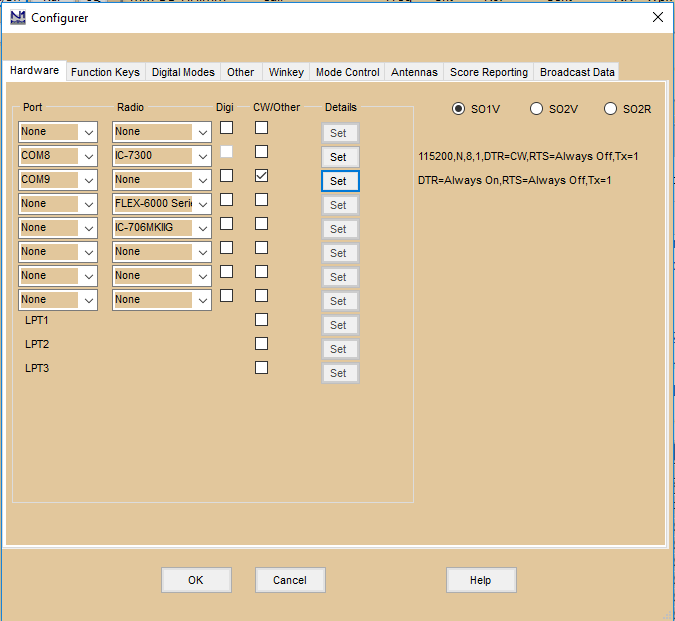
Selecione o número da porta COM virtual que você vai usar para controle de rádio. Selecione seu rádio na lista suspensa. Clique em "Set". Não selecione PTT via Radio Command. Garanta que os parâmetros de comunicação combinem entre o programa e o seu rádio (conforme o manual dele). Se você conseguir usar a mesma porta COM para todas as funções (controle de rádio, CW e PTT na mesma porta) e não precisar da própria interface CW/PTT do RIGblaster, defina DTR como CW e RTS como PTT (se necessário), marque a caixa CW/Other, e pronto.
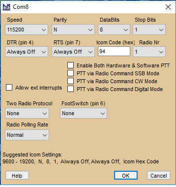
Para configurar a porta COM do RIGblaster Advantage para CW/PTT, selecione a porta COM do Advantage e marque a caixa CW/Other. Clique em "Set" para a porta COM do Advantage. Defina DTR nessa porta como CW, e RTS como PTT (se necessário). Normalmente o rádio vai exigir PTT por hardware, PTT por comando de rádio, ou o VOX do próprio rádio habilitado.
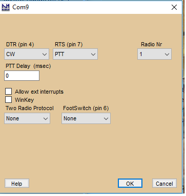
Transverters (Transverters)
O N1MM Logger+ suporta transverters, permitindo definir uma frequência de offset por bandmap. Clique com o botão direito no menu do bandmap e selecione Set transceiver offset frequency. Informe a frequência de offset do transceptor em kHz (valores negativos são permitidos). Exemplo: 116000 ao usar um transverter de 28 MHz para 144 MHz (144000 − 28000 = 116000). O mesmo vale para outras bandas (para cima ou para baixo). Isso pode ser definido por bandmap, então, ao usar dois transceptores com transverters, cada um pode estar em uma banda diferente. O offset é salvo pelo programa, então após reiniciar ele continua lá.
Other Hardware Information (Outras Informações de Hardware)
Tudo por Joe Subich, W4TV
USB Soundcards
Os manuais das placas de som abaixo (em ordem alfabética) indicam que têm entradas independentes de microfone e linha estéreo.
- Audigy 2NX External
- Creative SoundBlaster MP3+
- Turtle Beach "Audio Advantage Roadie"
A "opção de baixo custo" abaixo não tem manual online, mas as especificações no site mostram conectores separados de mic e linha.
- Byterunner UA-580
- parece ser a recomendação para quem precisa de uma placa de som externa (notebook etc.)
Other Soundcards
- SoundBlaster Live 24 External
- O único problema com a Live 24 External é que não é possível usar as entradas de mic e linha ao mesmo tempo (conectar o mic desconecta a linha). Funciona bem para o DVK interno do N1MM, mas não é possível "gravar QSOs" e usar o DVK ao mesmo tempo se você passar o microfone pela Live! 24 External
External versus Internal Soundcards (Placas de Som Externas x Internas)
Há quem afirme que placas de som USB externas funcionam substancialmente melhor (e deveriam ser usadas) que placas internas, em sinais digitais.
Joe, W4TV: A suposta "vantagem" vem de testes falhos, que não ajustam corretamente o nível de entrada de cada dispositivo de som para aproveitar ao máximo sua faixa dinâmica.
Exceto pelas piores placas de som ou sistemas excepcionalmente ruidosos, placas de som internas têm pelo menos 60 dB de faixa dinâmica utilizável (as melhores de 16 bits têm 80 dB, e placas de 24 bits com entradas de nível alto podem chegar perto de 100 dB). Se o áudio do transceptor for tal que o ruído de fundo do receptor (sem antena) fique de seis a dez dB acima do ruído de fundo da placa de som, o DSP do software (MMTTY etc.) vai conseguir operar em sua capacidade total. O AGC do receptor, entre outros fatores, limita a saída do receptor a um nível bem abaixo da capacidade de entrada da placa de som. A maioria dos receptores não varia mais que 30 a 40 dB entre banda quieta e sinais de recepção S9+40dB. O desempenho da placa de som não é uma questão de interna versus externa — é uma questão de prestar atenção cuidadosa para ajustar o nível correto, permitindo que a placa de som funcione adequadamente.
Unsupported Hardware – W5XD MultiKeyer
O W5XD MultiKeyer não é suportado, e não há planos de suportá-lo. O suporte a SO2R é oferecido por placas de som e Winkeyer, ou por outro hardware externo usando portas seriais e paralelas.
N1MM Rotator Control (Controle de Rotor do N1MM)
O controle de rotor pelo N1MM Logger é suportado usando:
- Software externo
- N1MM Rotor (vem com o N1MM logger)
- PSTRotatorAZ (15 Euros/US$22, de Codrut Buda – YO3DMU)
- Hardware externo
- ARSWIN, da EA4TX
- ERC e ERC-M, de Rene Schmidt DF9GR – PSTRotatorAZ é necessário para o ERC-M controlar dois rotores
Os rotores podem ser controlados de várias formas:
- Entry window:
- digitando um rumo no campo de indicativo e pressionando Alt+J. O rotor gira para o rumo informado
- Exemplo: 234 Alt+J gira o rotor para 234 graus
- O número deve ser numérico, entre 0 e 360
- usando os itens do menu Tools
- Turn Rotor Alt+J – Gira o rotor para o rumo do indicativo na Entry window
- Stop Rotor Ctrl+Alt+J – Para o giro do rotor, quando girando e sem rumo no campo de indicativo
- usando os atalhos de teclado abaixo:
- Alt+J – Gira o rotor para o rumo do indicativo na Entry window, ou do quadro de chamada (quando o campo de indicativo está vazio)
- Alt+L – Gira o rotor para o rumo de caminho longo do indicativo na Entry window
- Ctrl+Alt+J – Para o giro do rotor, quando girando e sem rumo no campo de indicativo
- digitando um rumo no campo de indicativo e pressionando Alt+J. O rotor gira para o rumo informado
- Janela Bandmap: clicando com o botão direito em um spot e selecionando "Turn Rotor"
- Janela Available Mult's and Q's: clicando com o botão direito em um spot e selecionando "Turn Rotor"
- Programa independente N1MM Rotor
Algumas observações:
- Se houver um indicativo com menos de três caracteres no campo de indicativo da Entry window, nada acontece
- A barra de status mostra o rumo para o qual o rotor vai girar. Exemplo: Turning Rotor to 123 degrees
- Normalmente o rotor gira para o rumo do país depois de digitado um indicativo. Essa informação vem do arquivo de países, e geralmente é o centro do país. Em contests de gridsquare, porém, isso raramente é prático, então, ao digitar um grid, o rotor gira para o rumo calculado entre seu próprio grid e o grid digitado
Rotator Control Basics (Fundamentos do Controle de Rotor)
O N1MM Rotor consegue controlar até 16 rotores por estação, e rotores conectados a outros computadores da sua LAN. Cada rotor precisa de sua própria porta COM, a menos que um software de interfaceamento externo seja usado. O N1MM Rotor usa a aba Antenna para definir quais rotores são controlados em cada banda. O N1MM Rotor consegue até girar um stack com um único comando. É um programa externo, que pode ser usado de dentro do N1MM Logger ou como programa independente.
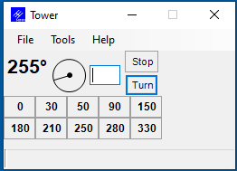
Supported Rotator Types (Tipos de Rotor Suportados)
- DCU1 – Sem suporte ao botão Stop
- M2 Orion – Velocidade mostrada no canto inferior direito da barra de status
- Prosistel
- AlfaSpid
- Yaesu
- RC2800P-A
- Rotor-EZ
- AlfaSpid ROT2
- Prosistel C
- Green Heron RT-21 (use a opção DCU-1 ou a configuração Rotor-EZ)
Todos os rotores, exceto o DCU1, suportam relato de posição. Vale tentar a configuração Rotor-EZ com outros rotores que usam o protocolo DCU-1 ou um superconjunto dele, pois a posição da antena pode aparecer na janela Rotor.
Painel superior: mostra o rotor selecionado (como definido no Setup, em Tools) e, depois do @, a posição atual do rotor.
Barra de menu: mostra os menus File, Tools e Help.
Os dígitos grandes indicam a posição atual do rotor. Quando um offset de antena foi definido, ele aparece em dígitos pequenos à direita da posição atual.
Mais à direita, uma indicação visual de para onde o rotor está apontando. A linha dentro do círculo pode ser arrastada para girar o rotor, em rotores que suportam relato de posição.
A caixa de texto é o campo onde você digita o rumo para o qual o rotor deve girar.
Clicar no botão Turn gira o rotor para essa posição, e o botão Stop para o giro na posição atual.
Um offset reverso aparece como (R).
Barra de status: mostra a velocidade, quando informada pelo rotor.
O programa é trazido para frente ao girar (a menos que esteja minimizado).
File Menu Selections (Opções do Menu File)
- File
- Always on Top – Deixa o programa sempre visível por cima das demais janelas
- Exit – Fecha o programa
- Tools
- Setup Rotors – Abre a janela 'Rotor Setup', mostrada abaixo
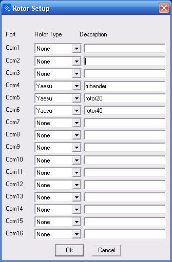
- Set Current Antenna Offset
- O offset é informado na aba Antennas do Configurer, ou pode ser definido para o rotor selecionado. Esse offset é somado à posição do rotor para determinar a posição da antena, então deve ser informado com sinal "-" quando a antena com offset gira no sentido horário em relação à direção do rotor. Útil para antenas montadas a 90 graus por interferência de padrão, ou que giraram um pouco com o vento durante o inverno
- Set Current Antenna Bidirectionality
- Bidirecional serve para dipolos, ou SteppIRs, quando o usuário prefere inverter a antena em vez de girá-la mais de 180 graus
- Calibrate Rotor – Calibra o rotor, só quando suportado pelo modelo, como o M2 Orion. O hardware ERC/ERC-M faz a calibração no próprio firmware
- Prosistel C Config
- Abre uma janela onde você define se a parada do rotor é ao Norte ou Sul, e o atraso dos caracteres
- Set rotation limits
- Recurso para donos de rotores com freios que travam. Você pode informar um número que restringe o quão perto de 0 ou 360 graus o rotor pode girar. Informando 10, os limites ficam entre 10 e 350 graus. Note que isso só pode ser definido para todos os rotores controlados por uma instância do programa — não pareceu valer a pena colocar isso na aba Antenna
- Uma nova linha aparece para cada rotor configurado
- Cada linha representa um rotor, conforme definido no Setup, em Tools
Button and Mouse Assignments (Atribuições de Botões e Mouse)
- Campo de entrada manual – Digite um rumo e pressione Enter ou o botão Turn para girar o rotor. O número é em graus
- Máximo: 450, mínimo: 0. Uma mensagem de erro aparece se outro valor for informado ao pressionar Turn
- Turn – Clique para girar o rotor até o rumo da caixa de texto. Pressionar Enter também gira o rotor, se o foco de entrada estiver no N1MM Rotor
- Stop Alt+S – Pressione para parar o giro. Alt+S ou Escape também param o giro
- Este botão só aparece quando o rotor suporta este recurso
- F1 – F10 – Pressionar as teclas de função mapeadas para os botões de rumo gira o rotor para a posição mostrada no botão. Clique com o botão direito para definir o valor do rumo
- Botões de rumo (F1 – F10)
- Clique com o botão esquerdo
- Pressionar um dos botões de rumo gira o rotor para a posição mostrada nele
- As teclas F1 a F10 são mapeadas para os 10 botões de rumo
- Clique com o botão direito
- Set Button to Current Position
- O rumo digitado no campo de entrada manual é usado para definir a posição
- Set Button to a Specific Heading
- Uma janela aparece para você digitar o rumo a ser usado na posição
- Set Button to Current Position
- Clique com o botão esquerdo
Só rotores que informam posição conseguem mostrar a posição atual (inclusive durante o giro).
Sending Rotor Position Information to N1MM Logger (Enviando Informações de Posição do Rotor ao N1MM Logger)
Por padrão, o N1MM Rotor envia informações de posição só para o programa principal N1MM Logger rodando no mesmo computador que o N1MM Rotor. Se você usa apenas um computador, com os dois programas nele, pode pular o resto desta seção; mas se o N1MM Rotor roda em um computador diferente do N1MM Logger, continue lendo.
Para enviar informações de posição a cópias do N1MM Logger rodando em outros computadores, você precisa editar manualmente o arquivo N1MMRotor.ini em um editor de texto, para dizer ao N1MM Rotor para quais computadores enviar a informação. Procure a linha "RotorReportingIP" na seção [Rotors]; se não existir, você terá que adicioná-la.
Se todos os computadores da rede estiverem na mesma sub-rede, ou seja, todos têm endereços IP começando com os mesmos três números, como 192.168.1.xxx, você pode enviar informações de posição do N1MM Rotor para todos os computadores da rede simplesmente definindo RotorReportingIP para o endereço IP de broadcast (último número = 255), assim:
[Rotors]
RotorReportingIP=192.168.1.255
Se você só quiser enviar informações de posição a certos computadores selecionados na rede, pode especificar um ou mais endereços IP individuais, separados por espaços. Por exemplo:
[Rotors]
RotorReportingIP=127.0.0.1 192.168.1.10 192.168.1.12
Isso envia informações de posição do rotor do N1MM Rotor para o N1MM Logger rodando em três computadores: o mesmo computador onde o N1MM Rotor está rodando, sempre denotado por 127.0.0.1 independente da sub-rede, e mais dois computadores cujos endereços IP, neste exemplo, são 192.168.1.10 e 192.168.1.12. Outros computadores da rede cujos endereços não estejam especificados no arquivo N1MMRotor.ini não recebem essas informações. Os endereços IP não precisam estar todos na mesma sub-rede, mas obviamente precisam ser alcançáveis a partir do computador onde o N1MM Rotor está rodando.
Using N1MM Rotor Stand-Alone (Usando o N1MM Rotor como Programa Independente)
Vá até o diretório do programa N1MM com o Explorador do Windows e encontre 'N1MMRotor.exe'. Este é o programa N1MM Rotor. Um atalho na área de trabalho é uma forma fácil de iniciá-lo. Todos os recursos mencionados acima podem ser usados.
Using N1MM Rotor with the Main N1MM Logger Program (Usando o N1MM Rotor com o Programa Principal)
Configure seus rotores usando o programa independente N1MM Rotor, como na seção anterior. Verifique se os rotores funcionam corretamente.
O programa principal N1MM Logger consegue girar rotores a partir das Entry Windows. Para configurar essa capacidade no programa principal:
- Configure as seleções de antena no Configurer, aba Antennas
Janela de configuração do N1MM logger em >Config >Configure Ports, aba Antennas
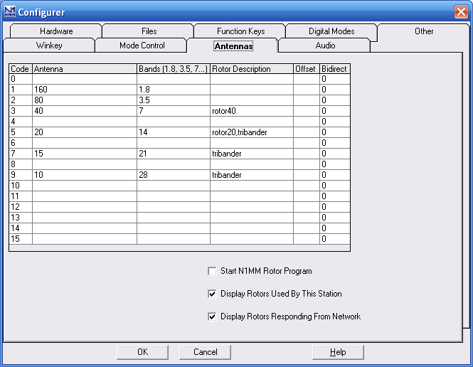
O nome alfanumérico informado no campo Rotor Description, na aba Antennas do Configurer, precisa ser exatamente igual ao nome informado na janela de configuração do N1MM Rotor.
O programa principal N1MM Logger também consegue exibir a direção atual de qualquer rotor usado pela estação controladora, ou qualquer rotor da rede. Para configurar isso, use as caixas "Display Rotors Used By This Station" e "Display Rotors Responding From Network" na aba Antennas do Configurer. Uma nova janela de exibição aparece para cada rotor que responde:
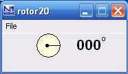
Com "Display Rotors Used By This Station" habilitada, só os rotores usados pelas bandas ativas nas Entry Window(s) são exibidos. Ao trocar de banda, os rotores exibidos são atualizados automaticamente.
Com "Display Rotors Responding From Network" habilitada, todos os rotores que informam sua posição ao computador, de qualquer N1MM Rotor rodando na rede, são exibidos.
Para iniciar o N1MM Rotor automaticamente junto com o programa principal, use a caixa 'Start N1MM Rotor Program' na aba Antennas do Configurer.
One Rotator Per Radio – how to do it (Um Rotor por Rádio – Como Fazer)
De vez em quando recebemos perguntas sobre como relacionar um rotor a um rádio ou VFO específico, em SO2R, de forma que, ao digitar um indicativo na Entry Window daquele rádio, o rotor das antenas daquele rádio receba o comando.
A resposta é simples — na aba Antennas do Configurer, defina as antenas do segundo rádio como se fossem antenas alternativas de uma determinada banda, e especifique a porta COM do rotor desejado. Depois, com a Entry Window do segundo rádio ativa, pressione Alt+F9. Só é preciso fazer isso uma vez, a cada troca de banda no segundo rádio. Veja esta página para mais sobre configurar mais de uma antena por banda.
N1MM Rotor running on another computer (N1MM Rotor Rodando em Outro Computador)
Vamos supor que o N1MM Rotor está em um computador separado, com IP 192.168.1.14, e o seu computador, rodando o N1MM logger, é 192.168.1.10.
- Garanta que o N1MM Rotor está rodando no computador ao qual o rotor está conectado
- Conecte os computadores em rede
- No Configurer, aba Broadcast Data, no computador 192.168.1.10:
- Rotor = 127.0.0.1:12040 192.168.1.14:12040
- Habilite "Display Rotors Responding From Network" na aba Antennas
- No Configurer, aba Antennas, no computador 192.168.1.10, cada rotor precisa estar definido na tabela
- Coloque isto no arquivo N1MMRotor.ini do computador que roda o N1MM Rotor (192.168.1.14):
- [Rotors]
- RotorReportingIP=127.0.0.1 192.168.1.10
- Controle o rotor pelos menus em Tools. Coloque a direção ou um indicativo no campo de indicativo e pressione Alt+J
- A estação solicitante vai ver uma janela Rotor Form abrir, mostrando a direção atual do rotor. Note que alguns rotores não conseguem informar progresso
- Pode ser necessário ajustar as configurações do firewall para permitir o tráfego do rotor entre os computadores
Turning a Stack (Girando um Stack)
No exemplo de imagem acima, à direita, o stack está na COM3 e COM4, e são girados ao mesmo tempo ao girar a antena 4 (stack).
Digite 3,4 e o rumo selecionado será enviado ao programa de rotor, que vai comandar os rotores (de qualquer tipo) da COM3 e COM4 para girar até aquele azimute. Se quiser controlar uma única antena, será preciso alternar para ela usando o toggle de antena (Alt+F9) no programa principal, pressionar ALT+J, e depois voltar para o conjunto de antenas desejado.
Run time error: 126
O erro de execução 126 pode ser causado por um firewall que não gosta de uma mensagem UDP enviada a 127.0.0.1 para avisar o programa de rotor sobre qual janela está ativa. Se você quiser usar o programa de rotor sem esse erro, vai precisar descobrir qual programa está causando a interferência. Primeiro verifique o firewall. Se não for isso, um usuário descobriu que um programa chamado "Port Explorer" era a causa; ao fechá-lo, o problema desapareceu.
Rotator UDP Packet Information (Informações do Pacote UDP do Rotor)
Os broadcasts para operar o programa separado Rotator Control são enviados automaticamente quando o usuário seleciona >Tools >Turn Rotor (Alt+J), sem exigir configurações ou alterações no arquivo N1MM Logger.ini. Os broadcasts sempre são enviados na porta 12040. Nota do desenvolvedor: o pacote do rotor não tem as tags de cabeçalho XML e não é totalmente compatível com XML. Sabemos disso, e não vamos corrigir, com medo de quebrar rotinas de terceiros escritas há anos.
O comando >Tools >Turn Rotor na Entry Window gera a seguinte mensagem UDP na porta 12040:
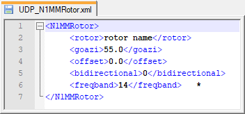
Nota *: exemplos de codificação de freqband são 1.8, 3.5, 7, 14, 21, 28
O comando >Tools >Stop Rotor (Ctrl+Alt+J) na Entry Window gera a seguinte mensagem UDP na porta 12040:
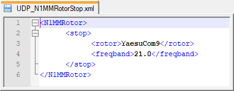
Nota: o rotor pode ser especificado pelo nome mostrado na janela de configuração do programa Rotor, ou pelo número da porta COM a controlar (ex.: "3")
Mensagens de atualização de status do rotor, enviadas pelo programa separado N1MM Rotor na porta UDP 13010, seguem este formato:
nomedorotor@rumodorotor
External Rotator Hardware and Software (Hardware e Software Externo de Rotor)
O controle de rotor é suportado diretamente por software e/ou hardware de:
- ARS-USB, da EA4TX
- PSTRotatorAZ (15 Euros/US$22, de Codrut Buda, YO3DMU) — veja a seção de links para as URLs
Inicie o software ARS-USB ou PSTRotatorAZ antes de tentar controlar os rotores.
O controlador de rotor ERC-M, da DF9GR, permite controlar um sistema de rotor AZ-EL, ou dois rotores de azimute, usando uma única porta COM. Porém, esse modo de operação não é suportado pelo N1MMRotor no momento. Você vai precisar usar duas instâncias vinculadas do PSTRotatorAz como intermediário entre o N1MM Logger+ e o ERC-M. A configuração é um pouco complicada, mas está totalmente documentada e funciona bem.